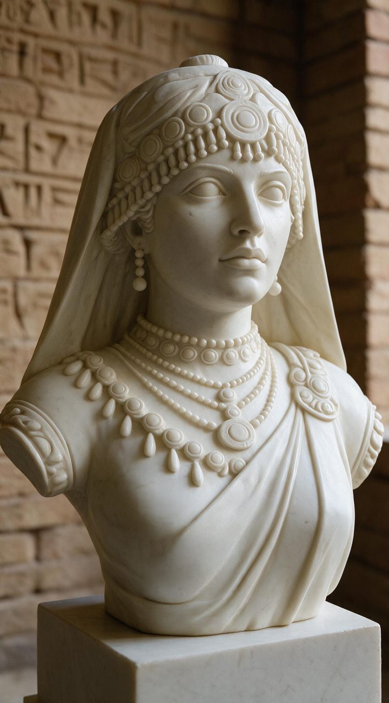

“Señora de todos los poderes divinos”
Exaltación de Inanna, verso inicial · traducción libre
Enheduanna · c. 2285–2250 a. C.
Enero
Sacerdotisa de Ur e hija del rey Sargón, escribió himnos que firmó con su nombre, unos 1.500 años antes de Homero.
Hoy: firmar una obra es un derecho.